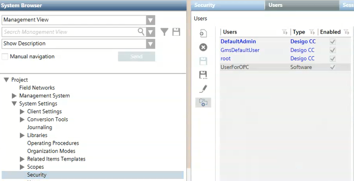
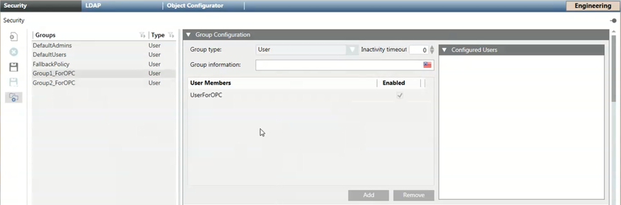
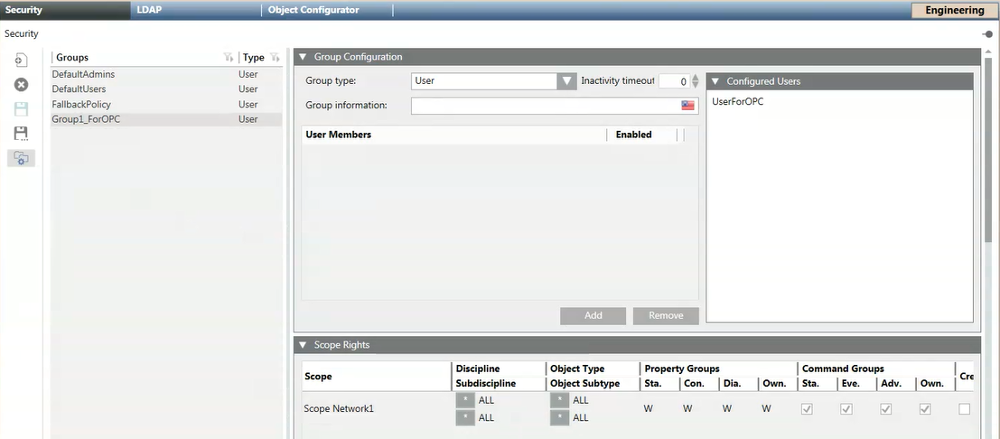

OPC User Software Account, User Group and Scope Rights
- You must first define an OPC user software account (see Create a Software Account User for OPC).
- Then you must create an OPC group to which the OPC user software account belongs (see Create a User Group for OPC).
- Finally, you must specify the scope rights of the OPC group (see Link Scopes to the OPC User Group).



An OPC group can contain many OPC scopes.


Scopes for OPC
When you configure the settings in the Scope Rights expander, remember to link only the scopes available in the Scopes folder in System Browser. If you try to add a new scope in the Scope Rights expander by clicking the Add button, this results in an invalid configuration (Scope = [name of the system]), and any third-party OPC clients will display an error message when trying to start the connection with Desigo CC OPC DA server.
Read and Write access for OPC items
Once the Desigo CC OPC DA server starts, all the information related to the OPC items is read from the database and exposed to the connected third-party OPC clients. Reading OPC items consists in retrieving standard and custom properties for all the system objects present in Management View and Application View and belonging to the scopes associated with the OPC user group.
Commanding an OPC item consists in the following write operation: executing a Desigo CC command on a property representing a specific OPC item.